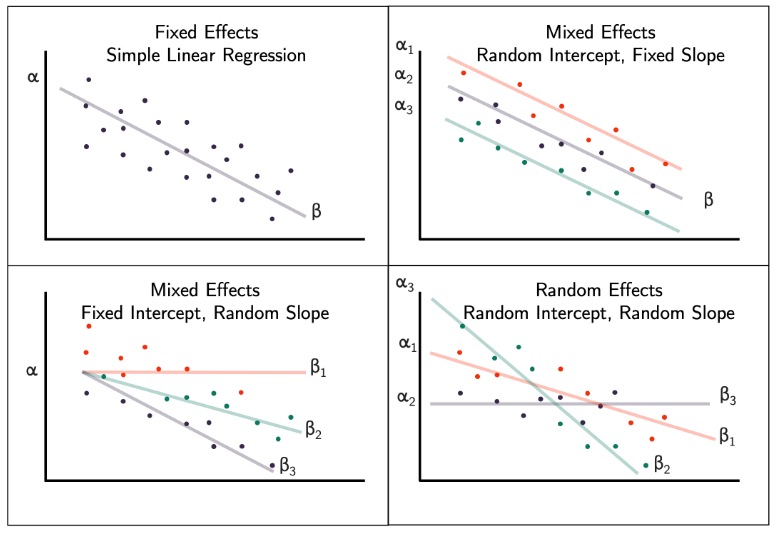
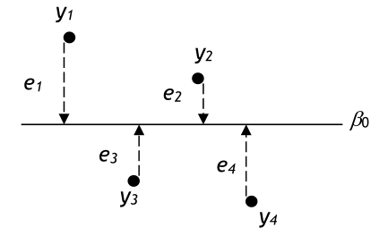
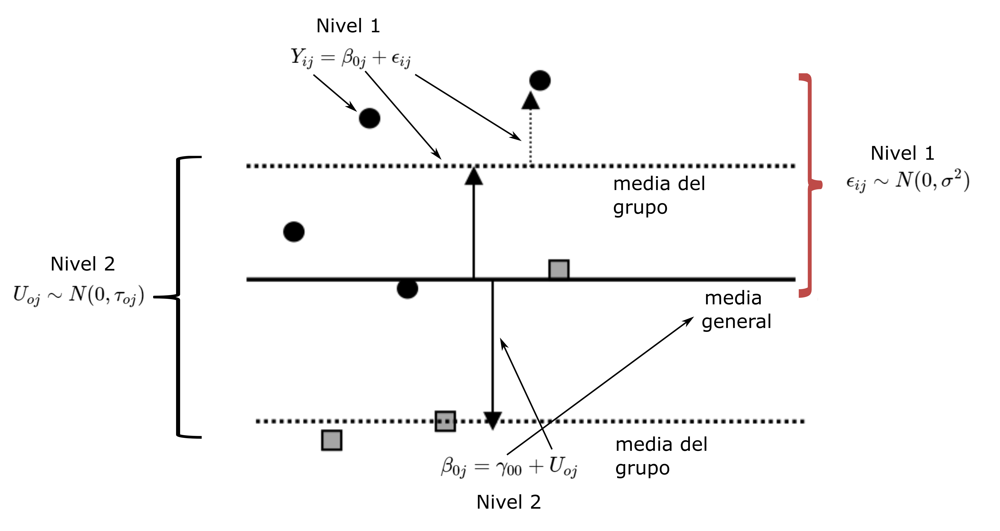
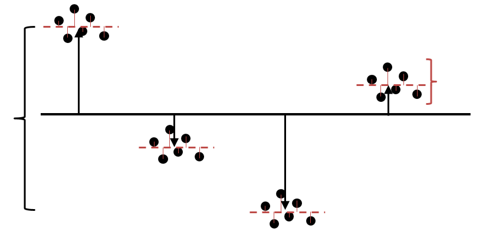
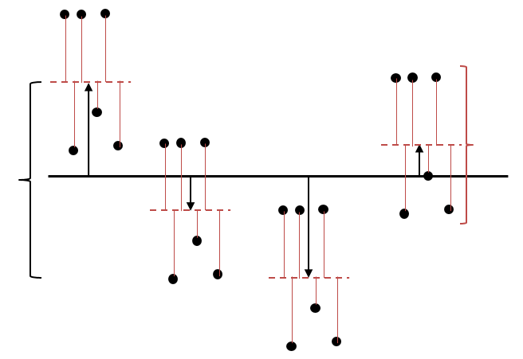

Análisis multinivel aplicado a epidemiología
Unidad 3
Definición y sinónimos
Técnicamente los modelos lineales multinivel son una extensión de los modelos lineales de regresión, donde se incorpora un segundo término aleatorio que nos permite:
estimar simultáneamente efectos de los diferentes niveles
considerar la no independencia de las observaciones al interior de grupos
examinar simultáneamente la variabilidad de los diferentes niveles
Sinónimos:
Modelos mixtos
Modelos jerárquicos
Modelos anidados
Modelos de efectos aleatorios
Variabilidad en intercepto y la pendiente
Ecuación modelo lineal nulo
\[ Y_{i} = \beta_{0} + \epsilon_{i} \]
\[ \epsilon_{i} \sim N(0, \sigma^2) \]
Ejemplo con 4 observaciones
Notación
| Término | Significado |
|---|---|
| \(Y_{i}\) | variable respuesta del individuo \(i\) |
| \(\beta_{0}\) | intercepto (media de \(y\)) |
| \(\epsilon_i\) | error (residuos con distribución \(N(0, \sigma^2)\) ) |
Ecuación modelo multinivel nulo
Nivel 1
\[ Y_{ij} = \beta_{0j} + \epsilon_{ij} \]
\[ \epsilon_{ij} \sim N(0, \sigma^2) \]
Nivel 2
\[ \beta_{0j} = \gamma_{00} + U_{0j} \]
\[ U_{oj} \sim N(0, \tau_{0j}) \]
Gráficamente
Notación
| Término | Significado |
|---|---|
| \(Y_{ij}\) | variable respuesta del individuo \(i\) en el grupo \(j\) |
| \(\beta_{0j}\) | intercepto aleatorio (media de grupo) |
| \(\gamma_{00}\) | media general de \(y\) (para todos los grupos) |
| \(\epsilon_{ij}\) | error (residuos con distribución \(N(0, \sigma^2)\) ) del individuo \(i\) en el grupo \(j\) respecto de la media del grupo \(j\) |
| \(U_{0j}\) | error (residuos con distribución \(N(0, \tau^2)\) ) del grupo \(j\) respecto de la media general \(\gamma_{00}\) |
Explicación
En este modelo de dos niveles, dividimos el residuo en dos componentes, correspondientes a los dos niveles en la estructura de datos.
La media de \(y\) para el grupo \(j\) es \(\gamma_{00} + U_{0j}\), por lo que el residuo a nivel de grupo \(U_{0j}\) es la diferencia entre la media del grupo \(j\) y la media general. El residuo a nivel individual \(\epsilon_{ij}\) es la diferencia entre el valor de \(y\) para el i-ésimo individuo y la media del grupo de ese individuo, es decir, \(\epsilon_{ij} = y_{ij} − (\gamma_{00} + U_{0j})\) .
Se supone que los residuos en ambos niveles siguen distribuciones normales con medias cero, por lo tanto, la varianza total se divide en dos componentes: la varianza entre grupos \(\tau_{0j}\), basada en las desviaciones de las medias grupales de la media general, y la varianza entre individuos dentro del grupo \(\sigma^2\), basada en las desviaciones individuales de las medias grupales. Por esta razón, el modelo a veces se denomina modelo de componentes de varianza.
Coeficiente de Correlación Intraclase
En modelos simples es similar al coeficiente de partición de varianza (VPC).
Mide el grado de dependencia de los individuos y permite evaluar la variabilidad entre y a través de los grupos.
\[ICC = \frac{\tau_{00}}{\tau_{00} + \sigma^2} \]
Varía de 0 (sin diferencias de grupo, es decir, \(\tau_{00}=0\) ) a 1 (sin diferencias dentro del grupo, es decir, \(\sigma^2=0\)).
Si el ICC es 0,2, por ejemplo, diríamos que el 20% de la variación es entre grupos y el 80% entre individuos dentro de los grupos.
ICC con varianzas similares
\[ICC = \frac{\tau_{00}}{\tau_{00} + \sigma^2} = \frac{10}{10+10} = 0,5 \]
ICC con mayor varianza intergrupos
\[ICC = \frac{\tau_{00}}{\tau_{00} + \sigma^2} = \frac{40}{40+10} = 0,8 \]
ICC con mayor varianza intragrupos
\[ICC = \frac{\tau_{00}}{\tau_{00} + \sigma^2} = \frac{20}{20+40} = 0,33 \]
Varianza explicada
Partir la varianza en sus diferentes componentes, nos permite entender cuanta varianza hay en cada nivel, comparada con el resto de los niveles.
También nos va a permitir ver como cambia la varianza en los diferentes niveles cuando incorporemos variables explicativas de cada uno.
Inferencia para efecto de grupo
\(H_0: \tau_{00} = 0\) (hipótesis nula es que no hay diferencias entre grupos)
Estadístico: razón de verosimilitud (LRT)
\[ LR = -2logL_1 - (-2logL_2) \sim \chi^2 \]
El estadístico de prueba LRT se compara con una distribución de \(\chi^2\) con grados de libertad iguales al número de parámetros adicionales en el modelo más complejo. En el caso del modelos de dos niveles, es la varianza entre grupos \(\tau_{00}\), por lo que hay 1 grado de libertad.
El rechazo de la \(H_0\) implica que existen diferencias de grupo “reales”, en cuyo caso se prefiere el modelo multinivel al modelo de un solo nivel. Sin embargo, si fallamos en rechazar el nulo, estaría justificado ajustar un modelo de un solo nivel, pero solo después de una mayor exploración porque es posible que las diferencias entre grupos se revelen después de agregar variables explicativas
Inferencia para efectos fijos
Similar a los resultados de un modelo lineal
\(H_0: \beta_i = 0\) (hipótesis nula es que los coeficientes son igual a cero)
El paquete lme4, por defecto no incluye valores p, dado que no es preciso estimarlos en modelos mixtos (problemas con el calculo de los grados de libertad)
Usaremos intervalos de confianza (función
confint())
Paquete lme4
Provee de funciones para ajustar modelos lineales multinivel y modelos lineales generalizados multinivel o mixtos.
Desarrollado por Douglas Bates, Martin Mächler, Benjamin Bolker y Steven Walker (2015)
La función principal para modelos lineales mixtos es
lmer().
Sintaxis en R
lmer(formula, data = NULL, REML = TRUE, ...)
donde:
| argumento | descripción |
|---|---|
| formula | un objeto tipo fórmula lineal que describa tanto la parte de efectos fijos como la de efectos aleatorios del modelo |
| data | dataframe con estructura multinivel en formato “largo” |
| REML | criterio de optimización en el ajuste (TRUE-FALSE) |
Escritura de fórmulas
A todos los términos que conocemos para la escritura de fórmulas en los modelos lineales clásicos le agregamos alguno de los siguientes elementos:
| Fórmula | Descripción |
|---|---|
| (1|g) | intercepto aleatorio para el grupo g (2 niveles) |
| (1|g/k) | interceptos aleatorios para el grupo g anidado en el grupo k (3 niveles) |
| (0+p|g) | pendientes aleatorias p para cada grupo de g pero con interceptos fijos |
| (p|g) | interceptos y pendientes aleatorias p para cada grupo de g |
| (1|g) + (1|k) | interceptos aleatorios para cada grupo g y para cada grupo k |
Salida de R
Intervalos de confianza
Salida de confint() en R para objeto lmer:
Tenga en cuenta que .sig01 se refiere a la desviación estándar del intercepto aleatorio, .sig02se refiere a la correlación entre el intercepto aleatorio y la pendiente aleatoria y .sig03a la desviación estándar de la pendiente aleatoria. El valor de .sigmase refiere a la desviación estándar del término de error. Desafortunadamente, estas no son las etiquetas más informativas, por lo que vale la pena verificar los valores informados para summary(modelo)que coincidan con la salida aquí.
Método de ajuste
Existen dos formas de ajuste implementadas por el paquete lme4: REML y ML
REML (máxima verosimilitud restringida o “residual”) es la forma por defecto. Es menos sesgada que ML.
ML (máxima verosimilitud o “full maximum likelihood”) se puede definir con el argumento REML = F
Cuando la estructura multinivel está balanceada los ajuste son iguales.
Procedimiento de estimación
Modelo nulo (ICC + LRT)
Iteración incorporando variables de nivel 1 y 2 (ICC + AIC + )
ANOVA
## refitting model(s) with ML (instead of REML)Tenga en cuenta el mensaje refitting model(s) with ML (instead of REML). La prueba de razón de verosimilitud requiere que los modelos se estimen por máxima verosimilitud, en lugar de máxima verosimilitud restringida (REML). El lme4paquete es lo suficientemente inteligente como para darse cuenta de esto y primero vuelve a estimar el modelo antes de calcular la prueba de razón de verosimilitud.
los grupos son las unidades de análisis.
variable dependiente e independientes se miden para los grupos
se examinan los factores a nivel de grupo asociados con la variabilidad de grupo a grupo en la variable dependiente
implican medir tasas de enfermedad para diferentes áreas y relacionarlas con las características socioambientales del área (medidas del ingreso medio del área) o características físicas del área (niveles de contaminación del aire).
no pueden examinar variables a nivel individual como factores de confusión o mediadores de la asociación ecológica observada.
los individuos son las unidades análisis
variable dependente e independientes se miden para los individuos
se examinan los factores a nivel de individual asociados con la variabilidad de individuos a individuo en la variable dependiente
relacionan características y comportamientos individuales a la probabilidad de desarrollar una enfermedad en un momento dado tiempo o durante un período de seguimiento.
se constituyen agrupamientos de individuos según características o exposición individual
Pensando en poblaciones
Considero cada vez más útil hacer una distinción entre dos tipos de preguntas etiológicas. Las primeras buscan las causas de los casos y las segundas las causas de la incidencia.
“¿Por qué algunos individuos sufren de hipertensión?” es una pregunta que difiere bastante de “¿por qué en algunas poblaciones es tan frecuente la hipertensión mientras que en otras es rara?”
Estas preguntas exigen diferentes tipos de estudios y tienen distintas respuestas.
Pensando en poblaciones

Pensando en poblaciones
La pregunta habitual “¿por qué algunos individuos tienen presión arterial más alta que otros?” podría plantearse con igual propiedad en los dos medios, dado que en ambos la presión arterial de los individuos varía aproximadamente en la misma medida (proporcionalmente); y las respuestas bien podrían ser muy similares en los dos casos (es decir, principalmente por variabilidad genética, y en menor grado por diferencias ambientales y del comportamiento).
Pensando en poblaciones
Podríamos llegar a comprender plenamente la causa de las diferencias entre los individuos y, no obstante, pasar completamente por alto la pregunta más importante para la salud pública: “¿Por qué la hipertensión no existe en Kenya y es común en Londres?”
Pensando en poblaciones
La respuesta a esta pregunta se vincula con los factores determinantes de la media de la población, puesto que lo que distingue a los dos grupos no depende en absoluto de las características de los individuos sino que es más bien un desplazamiento de la distribución en su conjunto: una influencia masiva que actúa sobre toda la población. Para encontrar los factores determinantes de las tasas de prevalencia e incidencia tenemos que estudiar las características de las poblaciones, no las de los individuos.
Problemas con niveles
La falta de reconocimiento de que las construcciones definidas en diferentes niveles pueden ser importantes en la comprensión de la variabilidad dentro de un nivel dado, y la incapacidad de distinguir adecuadamente los constructos definidos en diferentes niveles conduce a graves riesgos teóricos y técnicos.
Obviar el anidamiento de casos puede llevar a falacias interpretativas de diversa naturaleza, como las falacias ecológicas y atomista
Falacias
Falacia ecológica : es la inferencia falsa que se hace cuando se deduce incorrectamente a nivel individual (es decir, acerca de la variabilidad interindividual) a partir de información a nivel grupal.
Falacia atomista: es la que puede surgir cuando se hacen inferencias sobre la variabilidad intergrupal (o la relación entre variables grupales) a partir de datos individuales.
Gráficamente

Composición del dato científico
Unidad de análisis: entidades de estudio
Variables: aspectos de las unidades análisis que se han seleccionado para estudiar.
Valores: estados particulares que pueden asumir las variables.
Indicadores: formas de medir o evaluar las variables seleccionadas (dimensiones)
Unidades y niveles
“La relación entre indicadores y variables remite a otro asunto igualmente relevante para la comprensión del proceso de construcción de los datos: la de las relaciones de jerarquías entre niveles de análisis.”
Denomina “contexto” a los niveles supra-unitarios y nivel focal o de anclaje al del individuo, que tiene niveles sub-unitarios en función de la dimensiones componentes del nivel de anclaje.
Terminología
Variables individuales: refiere a variables que caracterizan a los individuos y se refieren a constructos individuales (por ejemplo, la edad o los ingresos personales).
Variables grupales: refiere a las variables que caracterizan a los grupos. A menudo se usan indistintamente los términos variables grupales, macrovariables, variables macro y variables ecológicas.
Terminología
Variables derivadas (agregadas): son un tipo de variables grupales que se construye agregando matemáticamente (por ejemplo, mediante una media o una proporción) las características de los individuos del grupo (por ejemplo, el porcentaje de personas analfabetas)
Variables integrales: son un tipo de variables grupales que no tienen ningún análogo individual y se refieren necesariamente a constructos grupales. Son ejemplos de variables integrales la existencia de ciertos tipos de leyes, el sistema político o económico, la desorganización social o la densidad de población.
Variables ambientales: en los estudios ecológicos y en el análisis multinivel se emplea a veces el término variables ambientales para referirse a mediciones grupales de exposiciones físicas o químicas. Las variables ambientales, así definidas, se han propuesto como tipo de variable grupal, diferente de las variables derivadas y de las variables integrales.
Estructura de los datos
2 niveles: jerárquico o anidado

Estructura de los datos
3 niveles: jerárquico o anidado

Estructura de los datos
2 niveles: medidas repetidas (datos de panel)

Estructura de los datos
No jerárquico
3 niveles: clasificación cruzada con medidas repetidas

Nivel o variable: clasificación fija o aleatoria?
¿cuándo se debe tratar una variable como una clasificación o nivel en lugar de una variable explicativa?
Clasificación fija: sus valores son conocidos y tiene un pequeño número fijo de categorías. Se tratan como variables.
Clasificación aleatoria: corresponde a un nivel de la estructura de los datos. Sus unidades pueden considerarse como una muestra aleatoria de una población más amplia de unidades.
Nivel o variable: clasificación fija o aleatoria?
Supongamos que agregamos una clasificación de escuelas, como estatales y privadas.
¿Es tipo de escuelas un nivel (clasificación aleatoria) o una variable (clasificación fija)?

Nivel o variable: clasificación fija o aleatoria?
El tipo de escuela tiene un pequeño número fijo de categorías. No hay una población más amplia de tipos de escuelas. Estatal y privada no son dos tipos muestreados de un gran número de tipos de escuelas, por lo que corresponde a una clasificación fija, y por eso trataríamos el tipo de escuela como una variable y no como un nivel.
La distinción entre clasificaciones fijas y aleatorias también está vinculada al concepto de objetivo de inferencia. Si quisieramos inferir a todas y cada una de las escuelas específicas como una elementos en sí mismo, entonces esta sería una clasificación fija. Usando una clasificación fija, podría estimar si la Escuela X es diferente en términos de progreso de la Escuela Z y la Escuela W, etc. Sin embargo, si el objetivo de la inferencia son las diferencias entre escuelas, entonces se debe usar la clasificación aleatoria.
Matriz de datos
Matriz para ejemplo anterior (2 niveles jerárquicos)

La pregunta de investigación en el análisis multinivel
El abordaje multinivel permite responder preguntas para cada nivel y también sobre el efecto de variables de un nivel en variables de otro.
Ejemplos sobre la última estructura vista:
¿Los hombres progresan más que las mujeres?
¿Varía la brecha de género entre las escuelas?
¿Los estudiantes progresan más en las escuelas privadas que en las públicas?
Resumen
El mundo real tiene una estructura compleja y/o se la imponemos a través de nuestro diseño de investigación.
Las estructuras complejas tienden a crear dependencias entre las observaciones.
El modelado multinivel se ocupa de la estructura compleja que se deriva de la realidad y el diseño del estudio; modela explícitamente dependencias y hace frente a estructuras de datos desequilibradas
En epidemiología la presencia de niveles múltiples y de estructuras anidadas y cruzadas en los datos es la norma (y no la excepción).
Instituto Nacional de Epidemiología